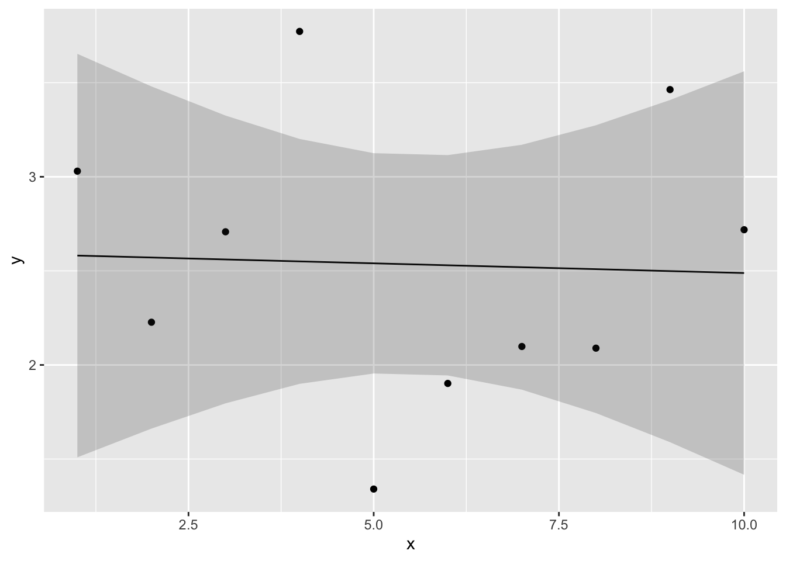
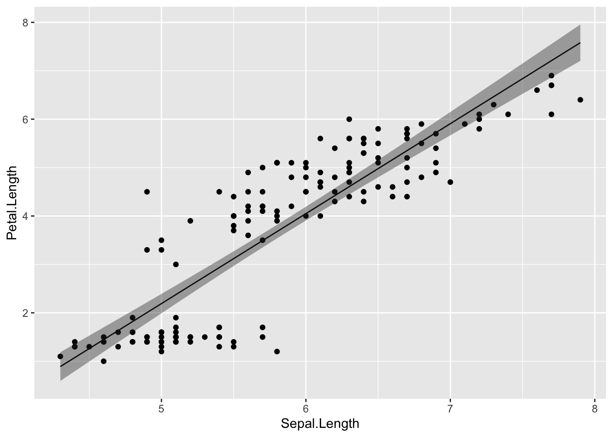
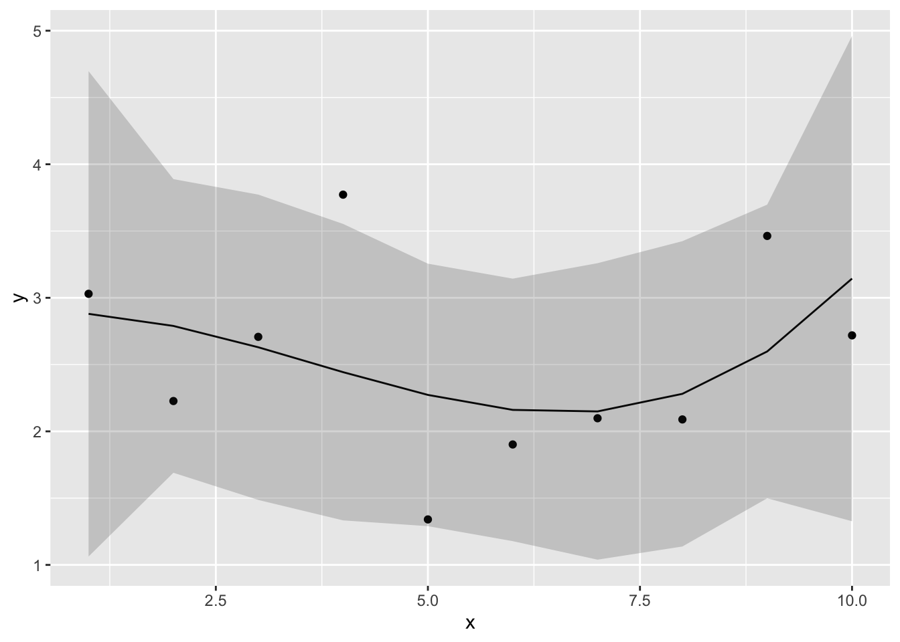
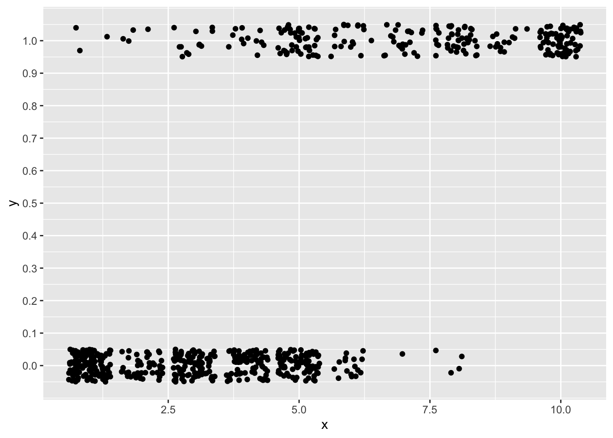

Chapter 9 線形モデル
これまで学んできた様々な統計手法（t検定、分散分析など）を、「線形モデル」という一つの枠組みで捉えていく。
この章のタイトルは「線形モデル」であるが、扱う内容は心理統計でも学んだ回帰分析である。
9.2 線形モデルの概要
まず、線形モデルの表現の仕方を理解する。以下の式は、変数\(x\)から、変数\(y\)を予測するプロセスを記述したものである。変数\(x\)は予測変数（predictor variable）、変数\(y\)は応答変数（response variable）と呼ばれる。このように、応答変数と予測変数との関係を式で表現したものをモデルと呼ぶ。
予測変数は、「独立変数」や「説明変数」とも呼ばれる。応答変数は、「従属変数」や「被説明変数」とも呼ばれる。
\[ \begin{equation} \hat{y} = \alpha + \beta x \tag{1}\\ y \sim \text{Normal}(\hat{y}, \sigma) \end{equation} \]
1番目の式の右側に\(\alpha + \beta x\)という線形の式がある。この式は、線形予測子(linear predictor)と呼ばれる。変数\(x\)に係る\(\beta\)は予測変数に係る傾き(slope)、\(\alpha\)は切片(intercept)である。1番目の式は、変数\(x\)の持つ効果（傾き）及びそれ以外の効果（切片）と変数\(y\)の予測値（\(\hat{y}\)）との関係を示している。
予測変数は2個以上でも構わない。予測変数の個数を\(K\)とすると、(1)の1番目の式は以下のように表現できる。
\[ \begin{equation} \hat{y} = \alpha + \sum_{k=1}^{K} \beta_{k} x_{k} \\ \tag{2} \end{equation} \]
\(y \sim \text{Normal}(\hat{y}, \sigma)\)は、「応答変数\(y\)が、予測値\(\hat{y}\)を平均、\(\sigma\)を標準偏差とする正規分布に従う」ことを示している。つまり、線形予測子から予測された値\(\hat{y}\)と誤差\(\sigma\)から、実際の値\(y\)が推定されるプロセスを表現している。
応答変数が正規分布に従うという前提をおいたモデルのことを、一般的に線形モデル(linear model)と呼ぶ。
線形モデルは、基本的に心理統計でも学んだ「回帰分析(regression analysis)」と同じである。
応答変数\(y\)を決定づける変数、\(\alpha\), \(\beta\)、及び \(\sigma\)はパラメータ(parameter)と呼ばれる。このパラメータを、既知の変数である\(x\)と\(y\)から推定する。
9.3 線形モデルによる解析
実際に、Rで線形モデルの解析をしてみよう。
Rには線形モデルを扱える関数lm()がある。irisデータを使って解析をしてみよう。
Sepal.LengthとPetal.Lengthの関係を散布図で確認する。

Sepal.Lengthが大きいほどPetal.Lengthが大きいという関係（正の相関）がありそうである。そこで、Sepal.Lengthの大きさから、Petal.Lengthの大きさを予測することを試みる。
lm()関数に、「応答変数~ 1 + 予測変数」のかたちで入力する。以下のプログラムを実行してみよう。
＊1 +の部分は省略しても構わない。1 +は線形予測子の切片の部分を表している。省略しても、lm()は自動で切片の値を求めてくれる。
結果をresultという名前でいったん保存した（名前はresult以外でも構わない）。summary()関数の中に、resultを入れて実行すると詳細な結果が出力される。
##
## Call:
## lm(formula = Petal.Length ~ 1 + Sepal.Length, data = iris)
##
## Residuals:
## Min 1Q Median 3Q Max
## -2.47747 -0.59072 -0.00668 0.60484 2.49512
##
## Coefficients:
## Estimate Std. Error t value Pr(>|t|)
## (Intercept) -7.10144 0.50666 -14.02 <2e-16 ***
## Sepal.Length 1.85843 0.08586 21.65 <2e-16 ***
## ---
## Signif. codes: 0 '***' 0.001 '**' 0.01 '*' 0.05 '.' 0.1 ' ' 1
##
## Residual standard error: 0.8678 on 148 degrees of freedom
## Multiple R-squared: 0.76, Adjusted R-squared: 0.7583
## F-statistic: 468.6 on 1 and 148 DF, p-value: < 2.2e-16色んな情報が出力されるが、まずは係数（Coefficients）の部分を見てみよう。ここでは、データから推定された切片や予測変数の傾きの結果が出力されている。
- Interceptの部分が切片の推定結果である。各変数の名前の部分（ここではSepal.Length）が予測変数の傾きの推定結果を示している。
- Estimateが推定された切片または傾きの値である。
- Std.Errorは推定された係数の標準誤差である。
予測変数が応答変数に対して影響力を持っているか？ それは傾きの係数の推定結果からわかる。係数の値は、予測変数が1単位増えたら応答変数がどのくらい増えるか、あるいは減るかを意味している。
係数がプラスならば、予測変数の値が増えると応答変数の値が増加する関係にあることを意味する。
係数がマイナスならば、予測変数の値が増えると応答変数が減少する関係にあることを意味する。
t value及びPrは係数の有意性検定の結果を示している（それぞれt値、p値）。ここでは、「母集団の係数がゼロである」という帰無仮説を検定している。p値が極端に低い場合は、「求めた係数の値は有意にゼロから離れている」と結論付けることができる。
この例の場合は、Sepal.Lengthが1単位増えると、Petal.Lengthが1.86だけ上昇することを示している。
切片の値は-7.1となっているが、Sepal.Lengthの値がゼロのときのPetal.Lengthの予測値を意味している（この例ではアヤメのがくの長さとしてありえない負の値になっているが、これは変数の標準化等を行っていないためである。詳しくは次章で解説する）。
Sepal.LengthとPetal.Lengthの散布図に、線形モデルから推定された切片と傾きの値を持つ以下の直線を引いてみよう。
\[ \begin{equation} Petal.Length = -7.10 + 1.86 Sepal.Length\\ \tag{3} \end{equation} \]
p = ggplot2::ggplot() +
ggplot2::geom_point(data = iris, aes(x = Sepal.Length, y = Petal.Length)) +
ggplot2::geom_smooth(data = iris, aes(x = Sepal.Length, y = Petal.Length), formula = y~x, method = "lm", se = FALSE)
p
線形モデルでは、直線の式で予測変数と応答変数の関係を表現する。実際のデータ（散布図の点）とのズレが最小になるような、直線の式を推定する（予測値と実測値とのズレが最小になるのが、最も良い予測である）。
9.4 最尤法
では、どうやって実測値と予測値とのずれが最小になるように傾きと切片の値を求めるのか？
線形モデル（及び一般化線形モデル）では、パラメータの推定に最尤法（maximum likelihood method）という最適化手法が用いられる。
9.4.1 最尤法によるパラメータ推定
ここにコインが1枚ある。コインの表が出るかを決定づけるパラメータ（つまりコインを投げて表が出る確率）を\(\theta\)（シータ）とする。この\(\theta\)の値を何回かコインを投げる実験を通して推定する。
1回目は、表が出た。この時点で、この実験結果が生じる確率は\(\theta\)である。
2回目は、裏が出た。1回目と2回目までの実験結果が生じる確率は\(\theta(1-\theta)\)である。
3回目は、表が出た。ここまでの実験結果が生じる確率は\(\theta(1-\theta)\theta\)である。
その後、4回目は裏、5回目は裏だったとする。5回目で実験をストップすることにする。この実験結果が生じる確率\(L\)は以下のように表すことができる。
\[ L = (1-\theta)^3 \theta^2 \tag{4} \]
\(L\)のことを尤度(likelihood)と呼ぶ（”ゆうど”と読む）。
尤度とは「もっともらしさ」を示す概念である。イメージとしては、「今回の観測結果が得られる確率」である。今回の観測データに対して最も当てはまりが良くなる、すなわち尤度が最も高くなるときのパラメータを求めるのが、最尤法 (maximum likelihood method)と呼ばれる手法である。
掛け算を扱う尤度は計算が困難なので、実際のパラメータ推定の際には対数化して足し算を扱う。対数化した尤度を対数尤度(log-likelihood)と呼ぶ。対数尤度が最大となるパラメータ\(\theta\)を求める。
\[ \log L = \log(1-\theta)+\log(1-\theta)+\log(1-\theta)+\log(\theta)+\log(\theta) \tag{5} \]
以下のプログラムで、上のコイン投げの例で最も対数尤度が高くなるときの\(\theta\)を求めている。maximumが対数尤度が最も高くなるパラメータの値で、objectiveがそのときの対数尤度である。（プログラムの意味については理解しなくて良い）
D = c(1, 0, 1, 0, 0) #観測データのベクトル：1=表、0=裏とする
#対数尤度を求める関数
LogLikelihood = function(x){
return(function(theta){
L = 1
for(i in 1:length(x)){
L = L * theta^(x[i]) * (1-theta)^(1-x[i])
}
return(log(L))
})
}
#optimize関数で、対数尤度が最も高くなるパラメータthetaを推定する
result_mlm = optimize(f = LogLikelihood(D), c(0, 1), maximum=TRUE)
result_mlm## $maximum
## [1] 0.4000015
##
## $objective
## [1] -3.365058パラメータ\(\theta\)と対数尤度\(\log L\)との関係を以下に示す。
#図示する
theta = seq(0.01,0.99,0.01)
logL = log(theta)+log(1-theta)+log(theta)+log(1-theta) + log(1-theta)
data_mlm = data.frame(x=theta, y=logL)
ggplot2::ggplot() +
ggplot2::geom_line(data=data_mlm, aes(x=x, y= y), size=1) +
ggplot2::geom_vline(xintercept = result_mlm$maximum, linetype="dashed", colour="red", size=1) +
ggplot2::labs(x ="theta", y= "log L") ## Warning: Using `size` aesthetic for lines was deprecated in ggplot2 3.4.0.
## ℹ Please use `linewidth` instead.
## This warning is displayed once every 8 hours.
## Call `lifecycle::last_lifecycle_warnings()` to see where this warning was
## generated.
対数尤度が最も大きくなるのは、\(\theta=\) 0.4のときである（表が出た割合である2/5と一致）。
ここではわかりやすくパラメータを1つのみ使って説明しているが、線形モデルの傾きや切片の推定も同じである。上の例の\(\theta\)を線形予測子に置き換えて同様の計算をする。
線形モデルのときのパラメータ推定には、最小二乗法と呼ばれる別の推定方法もある。ただし、最小二乗法を使っても最尤法を使っても、線形モデルの傾きや切片の推定結果は同じになる。
9.5 信頼区間と予測区間
モデルでパラメータの推定を行ったあとは、そのモデルがデータを上手く予測できているかを確認することも重要である。
具体的には、パラメータの信頼区間(confidence interval)とデータの予測区間 (predictive interval)をチェックする。
信頼区間とは、パラメータが分布する区間のことをいう。今回得られた標本を用いて係数を推定したが、標本の元となる母集団の係数の値はどのくらいか？その母集団の係数の予想の範囲が、信頼区間である。
予測区間とは、標本がどの範囲に分布するかを予測する範囲のことをいう。新たな標本を取ったときに、そのデータがどの範囲に分布するか。その予想の範囲が予測区間である。
Rには、線形モデルの推定結果から信頼区間と予測区間を算出してくれるpredict()関数が用意されている。先ほどの線形モデルの解析結果を使って、信頼区間と予測区間を求めてみよう。
9.5.1 信頼区間
result = lm(data = iris, Petal.Length ~ 1 + Sepal.Length)
result_conf = predict(result, interval = "confidence", level = 0.95)interval = "confidence"とすると、信頼区間を求めてくれる。
level = に信頼区間の幅を入力する（デフォルトで0.95だが、幅を変えたい場合は指定する）。
## fit lwr upr
## 1 2.376565 2.188121 2.565009
## 2 2.004878 1.792226 2.217531
## 3 1.633192 1.393955 1.872428
## 4 1.447348 1.194160 1.700536
## 5 2.190722 1.990526 2.390917
## 6 2.934095 2.775149 3.093040uprが95%信頼区間の上限、lwrが95%信頼区間の下限に当たる。
求めた信頼区間を図示してみよう
plot_conf = cbind(iris, result_conf) #実測値のデータと予測値のデータを結合する。
ggplot2::ggplot() +
ggplot2::geom_point(data = plot_conf, aes(x = Sepal.Length, y = Petal.Length)) +
ggplot2::geom_line(data = plot_conf, aes(x = Sepal.Length, y = fit)) +
ggplot2::geom_ribbon(data = plot_conf, aes(x = Sepal.Length, ymax = upr, ymin = lwr), alpha = 0.4) 
9.5.2 予測区間
result = lm(data = iris, Petal.Length ~ 1 + Sepal.Length)
new = data.frame(Sepal.Length = seq(4, 8, 0.1)) #0.1刻みで4から8まで範囲の数値ベクトルを入れたデータを仮に作る
result_pred = predict(result, newdata = new, interval = "prediction", level = 0.95) #newdataに先ほど作成した仮のデータを入れる。
head(result_pred) #仮データの数値に対応する予測区間が求められる## fit lwr upr
## 1 0.3322885 -1.4165179 2.081095
## 2 0.5181318 -1.2277203 2.263984
## 3 0.7039751 -1.0390829 2.447033
## 4 0.8898184 -0.8506063 2.630243
## 5 1.0756617 -0.6622915 2.813615
## 6 1.2615050 -0.4741389 2.997149interval = "prediction"と入力する。
予測区間を図示してみよう。
plot_pred = data.frame(Sepal.Length = seq(4, 8, 0.1), result_pred) #予測区間のデータを作成する
ggplot2::ggplot() +
ggplot2::geom_point(data = iris, aes(x = Sepal.Length, y = Petal.Length)) +
ggplot2::geom_line(data = plot_pred, aes(x = Sepal.Length, y = fit)) +
ggplot2::geom_ribbon(data = plot_pred, aes(x = Sepal.Length, ymax = upr, ymin = lwr), alpha = 0.4) 
実際のデータが予測区間の範囲に収まっているならば、そのモデルは概ねよくデータを予測できていることを示している。